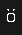

This is a small api built to grab optifine capes from Minecraft users and crop / scale them so you can only see the back of the cape (what you see in game).
The only endpoint (at the moment) is /cape/:username which returns the cropped cape of a user or text and a 400 status code if something went wrong.
# Request:
GET /cape/Elektra HTTP/1.1
Host: capes.kqzz.me
# Response:
HTTP/1.1 200 OK
Date: Wed, 24 Mar 2021 18:29:37 GMT
Content-Length: 270
Content-Type: image/png
*image bytes*
# Request:
GET /cape/Elektra?scale=10 HTTP/1.1 # ?scale=10 makes the cape 10 times larger
Host: capes.kqzz.me
# Response:
HTTP/1.1 200 OK
Date: Wed, 24 Mar 2021 18:29:37 GMT
Content-Length: 270
Content-Type: image/png
*image bytes*
import requests
r = requests.get("https://capes.kqzz.me/cape/Elektra")
resp_bytes = b""
if r.status_code == 200:
resp_bytes = r.content
else:
print(f"something went wrong! | {r.text} | {r.status_code}")
Before:
After:
